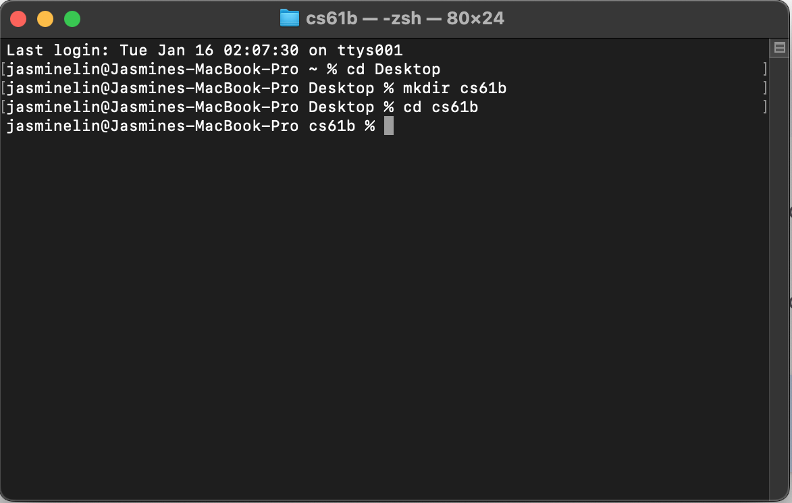
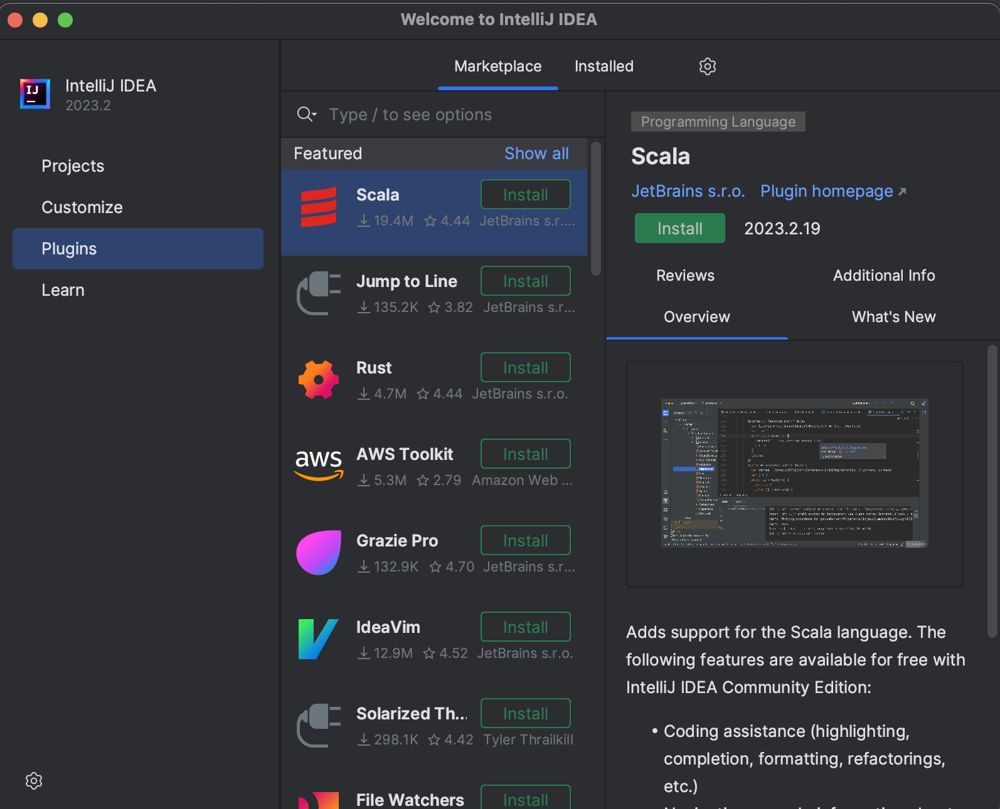
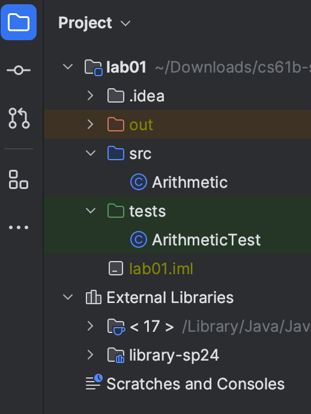

Lab 01: Setup¶
常见问题¶
每次作业的顶部都会链接一个常见问题解答。实验 1 的常见问题解答位于此处 。 常见问题解答是一份汇总了学生常遇到的问题和错误的列表，所以在向工作人员求助前，请先查阅此页面。
欢迎来到 CS 61B!¶
我们非常期待本学期能与你一同学习！在开始之前，你需要有一台可以用来完成作业的电脑。在本课程中，你将使用实际应用中的工具，这意味着你可能会遇到实际应用中的问题。这些问题颇具难度，而软件工程师每天都会碰到！ 别灰心 ，遇到困难时一定要寻求帮助！
我们强烈建议你参加实验课，并在实验课期间寻求帮助。如果你在实验课之外的时间学习，可以在 Ed 平台提问或参加答疑时间。
Danger
如果遇到问题， 请勿 盲目尝试各种方法！请寻求帮助。你的实验助教（TA）会告知你如何排队。他们可能会选择使用白板排队系统或在线答疑排队系统。
一般来说，在等待时， 尽可能进行作业的下一步 。
合作¶
CS 61B 课程的实验是 单人 进行的。这意味着你需要独立编写并提交自己的代码。特别是对于实验 1，你需要自行配置电脑。
不过，我们强烈鼓励你与其他同学合作！线下实验课是寻找合作小组的绝佳场合。
目标与工作流程¶
在本次实验中，我们将着手配置本课程会用到的软件。包括介绍终端、Git、Java 和 IntelliJ。我们还会完成一个小型 Java 程序，以便熟悉 Java 语言！
Info
本实验会很长！ 请勿跳过任何步骤！
个人计算机配置¶
任务：安装 Git¶
安装将有所不同，具体取决于您的操作系统。
Task
按照您的操作系统的指南安装软件。
终端¶
终端指南¶
在 CS61B 课程中，我们会大量使用终端来操作 Git。终端还有一些其他命令，可用于操作文件夹或文件。我们在这份简要指南中对其进行了汇总，请务必阅读：如何使用终端 。
在终端中，你可以使用指南中指定的命令在不同目录间切换、创建新文件、列出当前目录中的文件等。在本次实验中，以及在未来的作业中（尤其是作业提交时），你很可能会频繁使用终端。
Task
请通读终端指南并熟悉所有命令！也欢迎收藏本页面以供日后参考。
GitHub 和 Beacon 帐户¶
概述¶
CS 61B 课程不使用 bCourses，而是采用一个名为 Beacon 的内部系统来集中管理你的成绩和学生信息。
在这部分内容中，我们将为你设置 Beacon 账户，以及 CS 61B 课程的 GitHub 代码库（ “repo” ），你需要通过它提交所有编程作业。
任务：设置账户¶
-
在GitHub上创建一个账户。如果你已经有账户，则无需创建新账户。
-
前往Beacon，并按照步骤完成你的 GitHub 代码库注册。你必须登录伯克利账户才能完成谷歌表单形式的课程大纲测验。
- 完成所有步骤后，你应该会收到一封邀请你参与课程 GitHub 代码库协作的邮件。接受邮件邀请，以获取对课程代码库的访问权限。 **此邮件将发送到你用于创建 GitHub 账户的邮箱，不一定是你的伯克利邮箱。 **
Warning
不要按照 GitHub 提供的说明操作。在本实验的后面部分，我们会提供自己的一套说明。
Task
按照上述步骤创建您的 GitHub 和 Beacon 帐户，并连接它们。
你的仓库¶
你的代码仓库名称中会包含一个对你而言独一无二的数字。例如，如果你的代码库名为 sp25-s1 ，登录 GitHub 后，你可以通过https://github.com/Berkeley-CS61B-Student/sp25-s1访问你的私有代码库。 如果你的学号不是 “1” ，这个链接对你不可用。请将 “1” 替换为你自己的数字，以便在 GitHub 上查看你的代码库。
此外， 课程工作人员可以查看你的代码库。 这意味着当你在 Ed 或 Gitbugs 上私下询问调试问题时，你可以（也应该！）附上代码链接。其他学生无法查看你的代码库。
Danger
提醒一下，即使课程结束，你也不得公开本课程的代码。这样做违反我们的课程规定，你可能会受到纪律处分。
Git¶
Git 基础知识¶
在本课程中，你需要使用 Git 版本控制系统，这在实际应用中几乎无处不在。由于其背后的概念理解起来颇具难度，如果你在学习使用过程中遇到较大困难，也不必担心。
Task
在继续学习之前， 请阅读Git 使用指南中 “远程仓库” 之前的内容 。你无需阅读该部分之后的内容。这能帮助你对 Git 有个大致了解。
任务：配置 git¶
在使用 Git 之前，我们需要运行一些简短的命令来进行配置。
首先，打开你的终端。它看起来大概是这样：
 然后，使用以下两个命令设置 Git 将使用的姓名和电子邮件：
然后，使用以下两个命令设置 Git 将使用的姓名和电子邮件：
git config --global user.name "<your name>"
git config --global user.email "<your email>"
设置 Git 的默认分支名称：
git config --global init.defaultBranch main
设置“合并策略”：
git config --global pull.rebase false
我们还将更改与 Git 关联的文本编辑器。有时，Git 在输入提交信息等内容时需要你的协助，因此会为你打开一个文本编辑器。默认编辑器是 vim ，它出了名地难用。在本课程中，我们推荐使用 nano ，但你也可以自由选择你喜欢的编辑器。
请按照此处 的说明配置 Git 的默认编辑器（确保操作系统和说明是一致的）。
git 和远程仓库¶
首先，请阅读 Git 使用指南 中的 远程仓库 部分。
在本课程中，你需要使用 Git 将代码提交到在账户设置中创建的课程 GitHub 代码库。这样要求有以下几个原因：
-
避免你因丢失文件而承受巨大痛苦。
-
提交作业以供评分，并从自动评分系统获取结果。
-
防止你因对文件进行未知更改而破坏所有内容，从而遭受巨大苦恼。
-
确保我们能轻松访问你的代码，以便在你遇到困难时提供帮助。
-
防止你在公共 GitHub 代码库中公开你的解决方案。这严重违反课程规定！
-
让你接触未来参与大型项目时常见的实际工作流程。
任务：git 仓库和 Java 库¶
Java 库¶
与 Python 一样，我们有时也想使用他人编写的库。Java 的依赖管理有些混乱，因此我们提供了一个 Git 代码库，其中包含本课程将使用的所有依赖项。再次提醒，请确保你的终端已打开。
导航到你希望存储库的文件夹。对于本次实验，我们假设你将所有内容都放在名为 cs61b 的文件夹中。如果你愿意，也可以选择不同的名称。在导航到目标位置、创建 cs61b 目录并进入该目录（在本示例中使用 cd cs61b 命令）后，可能会是以下情况：

进入该文件夹后，运行：
git clone https://github.com/Berkeley-CS61B/library-sp25
以下是 library-sp25 的目录结构。使用 ls library-sp25 命令查看文件夹内容，确保你能看到下面列出的 .jar 文件。实际上文件远不止这些，我们仅列出前面几个。如果你使用操作系统自带的文件资源管理器，文件名中可能不会显示 .jar 后缀，这没关系。
library-sp25
├── algs4.jar
├── animated-gif-lib-1.4.jar
├── antlr4-runtime-4.11.1.jar
├── apiguardian-api-1.1.2.jar
└── ...
Task
按照上述说明获取课程所需的库。
使用 Github 进行身份验证¶
首先，在终端中运行以下命令。它将打印出你已有的任何 SSH 密钥，如果没有则会生成一个新的：
curl -sS https://sp25.datastructur.es/labs/lab01/get-ssh-key.sh | bash
Info
如果你收到诸如 bash: line 1: syntax error near unexpected token 'newline' 这样的错误信息，尝试刷新此页面并运行更新后的命令。
根据提供的位置，继续运行以下命令，确保将 <path_to_ssh_key> 替换为 SSH 密钥的实际位置， 并加上 .pub 后缀 。
cat <path_to_ssh_key>.pub
运行上述命令的结果应类似于以下格式：
ssh-ed25519 AAAAC3NzaC1lZDI1N6jp9h3Bnbebi7Xz7wMr20LxZCki3u8UQTE5AAAAIBTc2Hw1b0i8T [so
me-comment-here]
然后，复制终端中的输出内容。 [some-comment-here] 部分会因系统而异，每个人可能有所不同。复制输出内容后，前往GitHub，依次点击 “Settings” 、 “SSH, GPG Keys” 、 “New SSH Key”，将输出粘贴到 “Key（密钥）” 部分。 为密钥命名，以便记住该密钥所在的设备或用途，选择密钥类型为 “Authentication Key” 。然后将密钥添加到你的账户。
在终端中，运行以下命令以通过 SSH 连接到 GitHub：
ssh -T git@github.com
如果系统提示 “The key is not know by any other names. Are you sure you want to continue connecting (yes/no/[fingerprint])?” ，输入 “yes”。
如果一切顺利，你应该会看到类似以下内容：
Hi USERNAME! You've successfully authenticated, but GitHub does not provide shell access.
此时，你应该已成功通过 GitHub 身份验证，可以继续下一步了！
配置个人仓库¶
现在，是时候克隆你的个人代码库了。和获取库时一样，导航到你希望存放代码库的文件夹。我们建议使用存放 Java 库的同一文件夹（例如 cs61b ）。
Danger
请勿将你的代码库放在 library-sp25 文件夹内。这会在日后带来麻烦。例如，它应位于 cs61b 文件夹内，但不在 library-sp25 文件夹中（可能与库文件夹处于同一层级 ）。
**确保将 \*** 替换为你的课程代码库编号（你可以在 Beacon 上找到此代码库编号）。** 然后运行以下命令：
git clone git@github.com:Berkeley-CS61B-Student/sp25-s***.git
Tip
克隆完成后，你的终端会报告 warning: You appear to have cloned an empty repository 。这不是问题，只是 Git 在告知你代码库中没有文件。
进入新创建的代码库：
cd sp25-s***
确保我们使用的是预期的分支名 main ：
git branch -M main
现在，我们将添加 skeleton 远程仓库。 我们会将作业的起始代码添加到 skeleton 仓库，你将从中拉取代码（运行此命令前，请确保你在新创建的代码库中）。
git remote add skeleton https://github.com/Berkeley-CS61B/skeleton-sp25.git
列出远程仓库，此时应显示 origin 和 skeleton 两个远程仓库：
git remote -v
Tip
如果你看到类似 fatal: not a git repository 这样的错误，确保你已使用 cd 命令正确进入 sp25-s*** 目录。
Task
按照上述步骤克隆并配置你的代码库。
获取框架代码¶
“框架” 远程仓库包含所有作业的框架代码。每当发布新作业，或者我们需要更新作业时，你都需要从 “框架” 仓库拉取代码。首先，确保你处于 sp25-s*** 代码库目录中。
接下来，运行以下命令获取实验 1 的框架代码：
git pull skeleton main
Warning
此时，你应该有一个 lab01 文件夹，其中包含 src/Arithmetic.java 和 tests/ArithmeticTests.java 。如果你没有这些内容， 请勿手动创建 ！ 而是应该从 “框架” 仓库拉取代码，或者向工作人员求助。
任务：IntelliJ 设置¶
IntelliJ 是一款集成开发环境（IDE）。IDE 是一种综合性程序，通常集成了源代码编辑器、代码编译与运行工具以及调试器。像 IntelliJ 这样的一些 IDE 还具备更多功能，比如集成终端和用于 Git 命令的图形界面。此外，IDE 还拥有代码补全之类的工具，能帮助你更高效地编写 Java 代码。
我们 强烈推荐 使用 IntelliJ。我们编写的测试是在 IntelliJ 中运行的，在后续实验中我们还会使用其调试器。另外，IntelliJ 是行业标准工具，如果你今后再次使用 Java，肯定会用到它。
我们假定你使用 IntelliJ，并且不会为包括 VSCode 在内的其他编辑器提供支持。
Warning
IntelliJ 是一款面向实际工业软件开发的应用程序。它有许多我们不会用到的功能，而且你有时会遇到难以理解的情况。如果你遇到困难或发现某些功能似乎无法正常工作， 请寻求帮助 ！在 IntelliJ 中要准确判断该怎么做可能非常困难。可查阅IntelliJ 疑难解答指南，获取一些常见问题的解决方案。
在继续之前，请确保你已完成除 Git 练习之外的上述所有任务：
-
你已在自己的计算机上成功创建本课程的本地代码仓库库，即之前的
sp25-s***代码仓库库。 -
你已从框架仓库拉取代码，并且有一个
lab01目录。
安装 IntelliJ¶
-
从JetBrains网站下载 IntelliJ 社区版。作为学生，你实际上可以获取旗舰版的学生许可证，但本课程不会用到旗舰版的额外功能。 我们推荐并假定你使用社区版。
Danger
点击链接后，旗舰版会是你首先看到的版本，请务必向下滚动页面找到社区版。
Info
如果你使用搭载 M 系列芯片（M1、M2 或 M3）的 Mac 电脑，请选择 “.dmg (Apple Silicon)” 版本。否则，请选择 “.dmg (Intel)” 版本。
-
为你的操作系统选择合适的版本后，点击下载，等待几分钟直至文件下载完成。
-
运行安装程序。如果你此前安装过旧版 IntelliJ，此时应先卸载旧版本，再安装这个新版本。
Info
在 IntelliJ 下载过程中，你可以阅读或浏览我们的IntelliJ 使用指南。完成本次实验你无需完全研读并记住其中内容。IntelliJ 功能复杂，但它的核心功能对你来说应该和以前用过的文本编辑器有些类似。
安装插件¶
打开 IntelliJ，然后按照以下步骤操作。
在继续之前，请确保你运行的是 IntelliJ 2023.2 版本或更高版本。 这是因为我们将使用 Java 17 或更高版本。我们使用的是 IntelliJ 2023.2 版本 （文档中的配图基于此版本），它有更新后的用户界面。请注意，本次实验中可能会有旧版 IntelliJ 的截图，不过这没关系，因为总体布局仍然相对一致。
-
在欢迎界面中，点击左侧菜单中的 “Plugins（插件）” 按钮。 
-
在出现的窗口中，点击 “Marketplace（市场）” ，并在顶部的搜索栏中输入 “CS 61B” 。CS 61B 插件条目应该会出现。如果你点击自动补全建议，可能会出现与下面展示的略有不同的窗口，这是正常的。
-
点击绿色的 Install 按钮，等待插件下载并安装完成。

如果你上一学期就安装了该插件，请务必进行更新。
-
现在，搜索 “Java Visualizer” ，然后点击绿色的 Install 按钮来安装该插件。

-
重启（关闭并重新打开）IntelliJ。
有关插件使用的更多信息，请阅读插件指南 。你现在不必马上阅读。
安装 Java¶
Warning
这一步非常重要
安装好 IntelliJ 和插件后，我们就可以安装 JDK 了。请按以下步骤操作：
-
启动 IntelliJ。如果没有打开任何项目，点击 “Open” 按钮。如果当前已打开一个项目，依次点击 “File -> Open” 。
-
找到并选择当前作业所在的目录。例如，对于实验 1，你应选择
sp25-s***中的lab01目录。 -
进入 “File -> Project Structure” 菜单，确保你处于 “Project” 选项卡。然后，按照 “Set up the project JDK（设置项目 JDK）” 的说明下载 JDK 版本。 选择 17 或更高版本 ！ 根据你选择的版本，确保它与语言级别兼容（例如，如果你选择了 SDK 18，将语言级别也选择为 18 ）。
作业设置¶
按照《作业工作流程指南》中 “在 IntelliJ 中打开” 部分的说明打开 lab01 （如果你尚未退出上一部分内容，可以从步骤 3 开始 ）。
每次打开作业时，你都需要确保已设置好项目结构，并添加了 library-sp25 包。
创建项目¶
在打开并设置好 lab01 后，你应该会在左侧面板中看到以下文件：
-
src/Arithmetic，这是一个 Java 文件，包含你的第一个编程练习。 -
tests/ArithmeticTest，另一个 Java 文件，用于检查Arithmetic的实现是否正确。 
IntelliJ 测试¶
为测试一切是否正常运行，运行 Arithmetic 类，方法是打开该文件，点击 public class Arithmetic 旁边的绿色三角形，然后点击 “Run ‘Arithmetic.main()’” 。

??? 还有其他方式可以运行 main

假设该文件有一个 `main` 方法，你可以在项目视图中右键单击该文件，然后选择 `[filename].main()` 。你也可以通过右上角的绿色箭头（红色框出部分）来运行它。
您应该会看到一个控制台弹出，提示你输入一个数字：
 如果你按照提示操作，你（可能）会发现一些错误！ 先别急着修复 。
如果你按照提示操作，你（可能）会发现一些错误！ 先别急着修复 。
测试你的代码¶
虽然我们可以反复运行 Arithmetic 文件来检查代码是否正确运行，但每次都要在程序中输入内容，还要手动检查输出是否正确，这会花费大量时间。因此，我们使用 测试 。
打开 ArithmeticTest ，点击 public class ArithmeticTest 旁边的绿色三角形。这将运行我们在本次作业中提供的测试。此时，你会看到以下内容：

绿色对勾（✅）表示你通过的测试，而黄色叉号（❌）表示你未通过的测试。不用担心输出内容重复，这是 IntelliJ 的一个小特性。
Task
修复 Arithmetic.java 中的错误，使测试能够通过。
任务：使用 git 和 github 保存你的代码¶
在你对代码进行修改时，经常保存工作是个好习惯。我们之前简要讨论过相关命令，现在将说明在实际操作中应如何使用它们。如果你想回到代码的某个先前版本，有更多可回滚的选项会更好。接下来的说明将介绍如何通过 Git 的提交（即文件系统快照）来保存工作。
-
在本地代码库中对代码进行一些修改后，Git 会检测到这些更改。要查看本地代码库的当前状态，使用
git status命令。运行此命令并尝试理解结果。这些结果对你来说有意义吗，或者它们符合你的预期吗？在运行其他 Git 命令之前运行此命令来了解当前情况是个好习惯。 -
要保存对某个文件所做的工作，我们首先要暂存该文件，然后再提交。我们使用
git add命令暂存文件。这不会实际保存文件，而是标记该文件以便下次提交时保存。以下两个命令展示了在 Git 代码库中保存工作的过程。对于git add命令，根据你所在的目录不同，要添加的文件路径可能会有所不同（使用git status查看路径）。
git commit 命令中的 -m "Completed Arithmetic.java" 部分指定了要附加到这个快照的消息。每次提交都应该有一条提交消息，以明确标识此次提交中具体做了哪些更改。以下是一个示例工作流程：
git add lab01/src/Arithmetic.java
git commit -m "lab01: Completed Arithmetic.java"
如果你运行 git status ，你会看到 “你的分支领先于 ‘origin/main’” 。你还会看到已暂存的更改不再处于暂存状态，而是已被提交。如果你自暂存后就没有进行过编辑，那么应该没有未暂存的待提交更改。
- 我们希望将这些更改推送到 GitHub 代码库，以便我们和 Gradescope 能看到你的更改。如果你的代码库在其他地方或其他计算机上进行了初始化，这些更改也可供拉取。
git push origin main
此时运行 git status 会显示 “你的分支与 ‘origin/main’ 保持一致” 。
Warning
养成经常保存文件并执行 git commit 操作的习惯（比如每 15 分钟一次）。当你弄乱代码时，这会非常有帮助，因为它能让你撤销更改，并查看最近做了哪些修改。
基本上，当你在代码仓库中工作时，首先执行 git pull ，确保你使用的是最新代码。在工作过程中，频繁提交。完成工作后，执行 git push origin main ，这样你所有的更改都会上传，并且下次可以再次拉取。
提交到 Gradescope¶
虽然我们使用 GitHub 来存储编程作业，但实际评分是通过 Gradescope 进行的。最后一步是将作业提交到 Gradescope，我们用它来对编程作业进行自动评分。
Tip
在实验课的第一天，我们已将每个人在 CalCentral 上的邮箱添加到了 Gradescope。请务必使用 CalCentral 上列出的邮箱地址登录。 如果你在 Gradescope 上访问课程时遇到问题，或者想用不同的邮箱地址登录，请咨询助教！
Task
如果还没有完成，确保你已添加、提交并推送了更改。为方便起见，以下重复相关步骤：
-
使用
git add命令添加作业目录。例如，对于实验 1，在代码库根目录（sp25-s***）下，你可以使用git add lab01。 -
使用
git commit -m "<提交信息>"命令提交文件。提交信息是必填项。例如，git commit -m "Finished Lab 1"。 -
使用
git push origin main命令将代码推送到远程代码库。你可以访问 GitHub 上的个人代码库，查看更改是否已反映出来，以此验证更改是否已推送。 -
在 Gradescope 上打开作业。选择 GitHub，然后选择你的
sp25-s***代码库和主分支，接着提交作业。你会收到一封确认邮件，自动评分系统将自动运行。Gradescope 会使用 GitHub 上你代码的最新版本。如果你认为评分的代码不对，请检查你是否已执行添加、提交和推送操作，可使用git status命令查看 。
交付内容¶
提醒一下，本次作业设有常见问题解答（FAQ）页面。只有一个必需文件，位于 lab01 目录中：
Arithmetic.java
你应修复其中的错误，使测试能够通过。我们会使用自动评分器检查此文件！对于本次实验，自动评分器的测试与你在自己计算机上运行的测试相同。
Task
如果还没有完成，确保你已按照上述工作流程，将更改添加、提交并推送到 GitHub。如果你通过了 ArithmeticTest.java 中的所有测试，本次实验应能获得满分。
恭喜你完成第一个 CS 61B 实验！
如果你需要复习如何提交作业，可以参考作业工作流程指南。
选做：乔希·胡格（Josh Hug）的配色方案¶
乔希·胡格表示： 我不太喜欢 IntelliJ 的默认配色。
Mariana Pro ：如果你想要乔希在直播授课中使用的配色方案，请安装 Mariana Pro 主题插件。要获取 Mariana Pro，前往你安装 CS 61B 插件时使用的插件商店，搜索 “Mariana Pro” 。该插件由蒂博·苏拉巴伊勒（Thibault Soulabaille）制作。请注意，我偏好纯黑色背景，而 Mariana Pro 是深灰色。你可以按照这些说明 更改背景颜色。
注意：如果你想恢复 IntelliJ 的默认配色，前往 “File（文件）→Manage IDE Settings（管理 IDE 设置）→Restore Default Settings（恢复默认设置）” 。